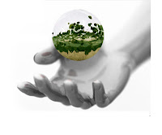
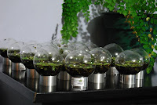
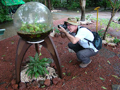
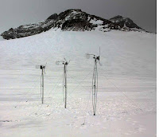
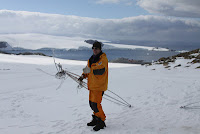
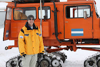
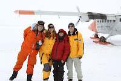

Joaquín Fargas: Proyectos
martes, 12 de febrero de 2013
Desde la ciencia, divulga conceptos y teorías de un modo lúdico y poético; desde el arte enseña a comprender las propiedades de la naturaleza y a tomar conciencia de su cuidado.
{kind=link}

PROYECTO BIOSFERAProyecto Biosfera se plantea, como misión, colaborar activamente en la concienciación, en todos los niveles de la sociedad, sobre la necesidad de hacernos cargo del cuidado de nuestro planeta.

Estos sistemas, precisan la luz, al igual que nuestro planeta precisa el Sol, como fuente de energía para que los ciclos vitales se desarrollen en su interior y perduren en función de múltiples variables. Son, en una escala infinitesimal, representaciones de nuestro medio.
{kind=link}


{kind=link}

“Debemos hacer algo aunque no sepamos los resultados,
porque de no hacer nada ya sabemos los resultados”
PROYECTO UTOPÍA
{kind=link}
La misión del Proyecto Utopía es concienciar sobre el problema del cambio climático y su efecto sobre los polos y los glaciares con el objetivo de promover en la sociedad la lucha, tanto individual como conjunta, contra el calentamiento global.

A pesar de su apariencia estéril, el continente antártico y las aguas que lo rodean están llenas de vida, y el territorio desempeña un importante papel en el clima y la salud de la Tierra.

La importancia de la preservación de la Antártida, considerada como una gran reserva natural mundial, es una cuestión que afecta al equilibrio ecológico global.
Don Quijote contra el cambio climático:
{kind=link}

El proyecto utópico inicial y disparador consiste en una serie de tres molinos de viento instalados en la Antártida que generan frío con el objetivo de mantener los glaciares y los polos congelados. Este combate quimérico contra el cambio climático representa la capacidad del hombre de luchar contra aquello que parece imposible.


{kind=link}


{kind=link}

{kind=link}

"Cambiar el mundo no es una locura ni una utopía...."